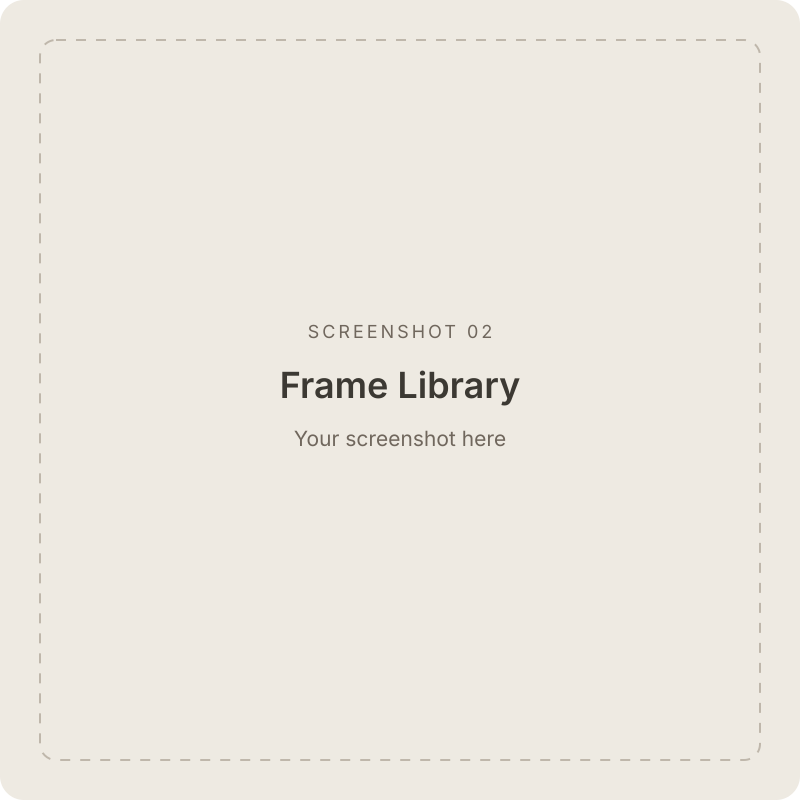

Your own frame library
Import transparent PNG frames once and reuse them across projects. Search, preview, filter by device, rename, and manage frames together.
App Store screenshots · Native macOS app
App Store screenshots, made on your Mac.
Bring a screenshot and a device frame. Add a background, a headline, and a few finishing touches. Export one image or an entire set, with every layout just the way you left it.
macOS 26.0 or later · Images stay on your Mac
From the first frame to the final export.

Import transparent PNG frames once and reuse them across projects. Search, preview, filter by device, rename, and manage frames together.
Select a frame and Framed chooses a canvas from its device family. Built-in presets cover iPhone, iPad, Mac, Apple Watch, and more.
Give each image its own frame, background, headline, and effects. Duplicate and reorder screenshots, or copy a style across the set.
Add up to two lines of text with your choice of font, size, color, and position. Finish with a corner glow or a gentle device fade.
Place a window capture on a gradient desktop inside a Mac frame. Adjust the window’s size and position, and add an optional shadow.
Move the device and headline directly on the canvas. Center guides, snapping, zoom, and a hand tool help you get the details right.
Save lossless PNG or JPEG with adjustable quality. Choose an output canvas and scale, then save one image or the whole set into your chosen folder.
Portable .framed projects keep images and layouts together. Reopen your work, undo and redo edits, and get a prompt before closing unsaved changes.
Import screenshots from a real device or simulator, then choose a frame from your library. You can start with a frame, too.
Arrange the device, choose a background, and add a headline. Each screenshot remembers its own layout.
Check the canvas dimensions and export your images. Save a .framed project to pick up where you left off.
Get device bezels directly from Apple Design Resources, then import transparent PNGs into Framed. If the download contains design files, export the PNG frames you need first.
Apple device artwork is not included with Framed. Front-facing frames with transparent screens work best.
Apple Design ResourcesFramed processes screenshots and device frames on your Mac. Your images are not uploaded to a server, and imported frames stay in your local library.
For App Store uploads, use an opaque background and export at 100% to keep the selected canvas dimensions.
Apple’s screenshot requirements